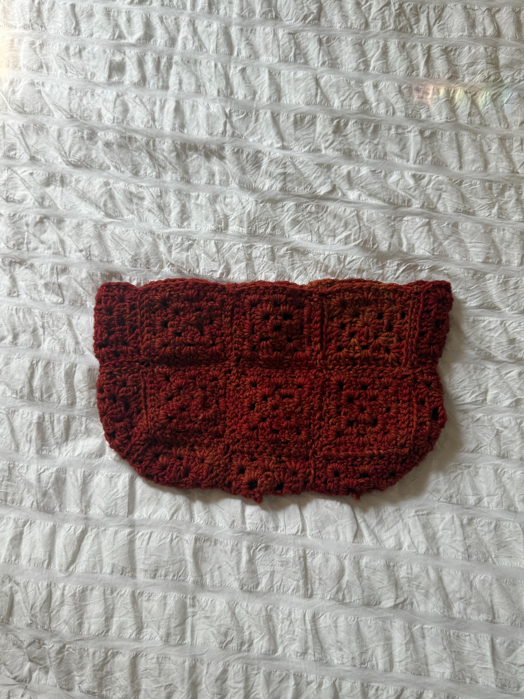
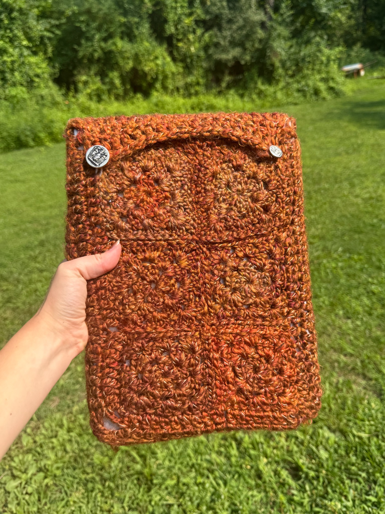
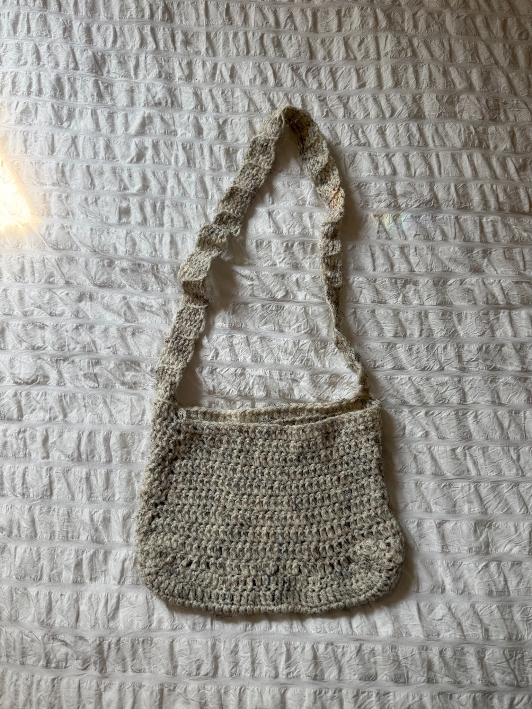
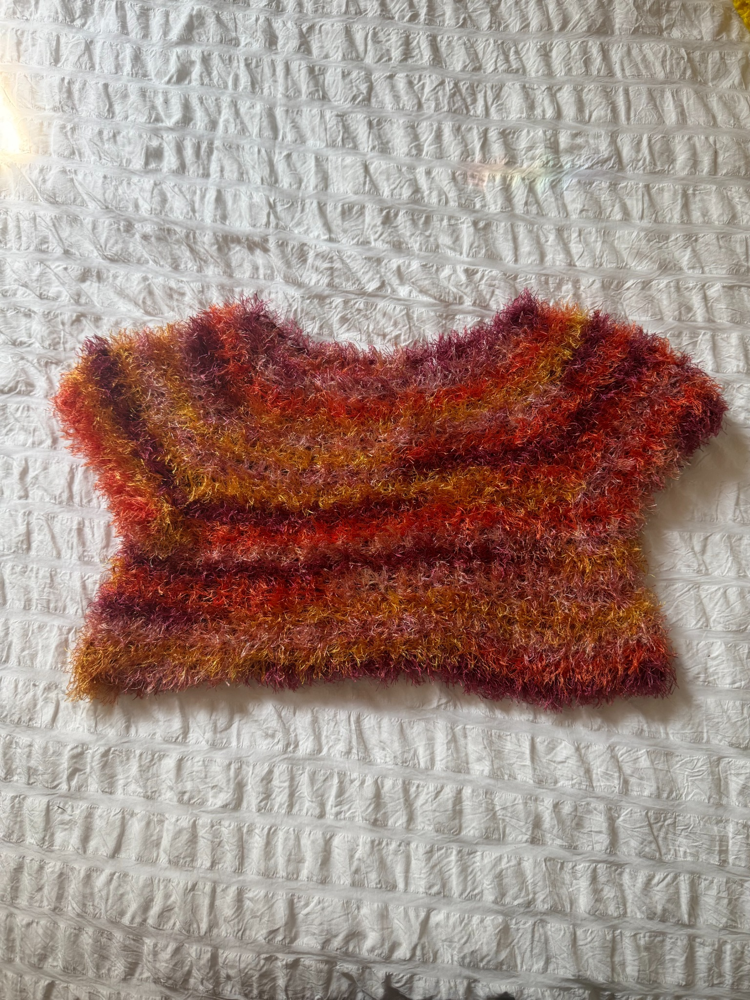
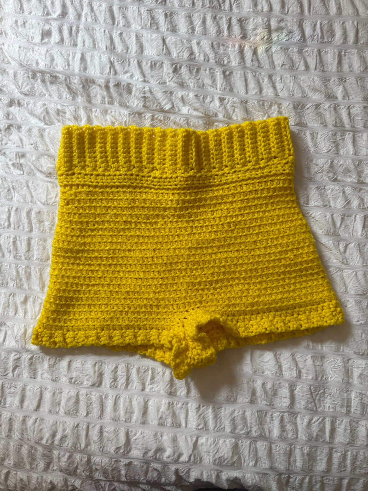
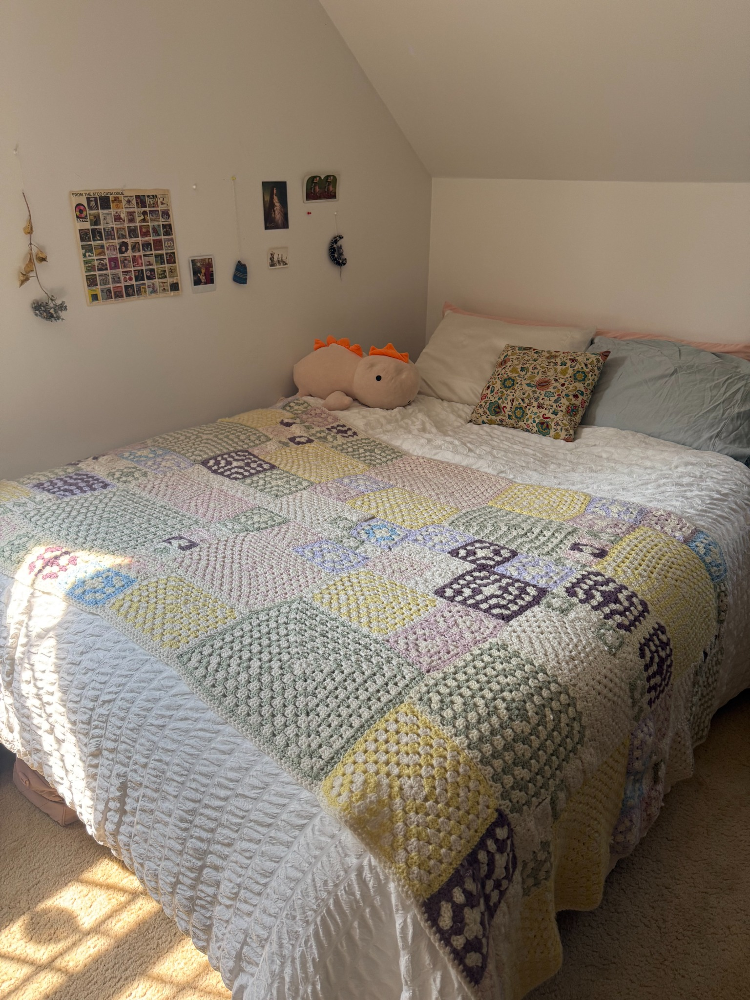
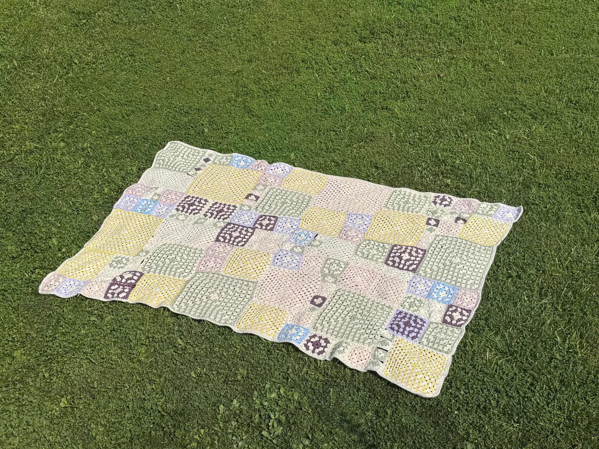
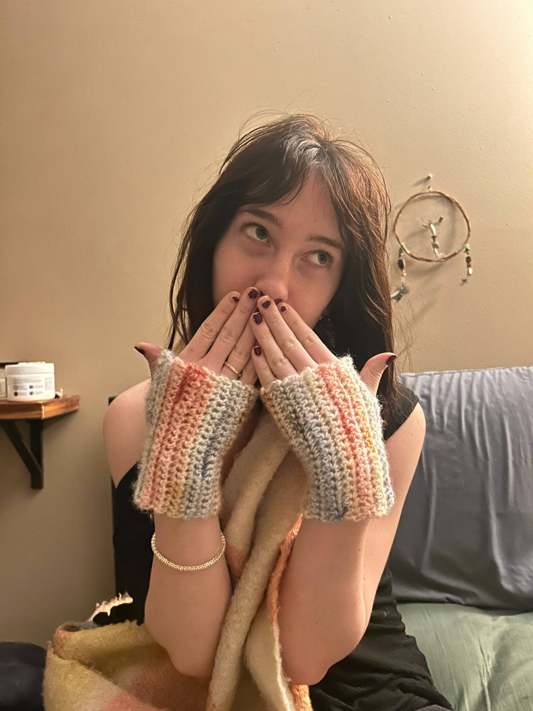
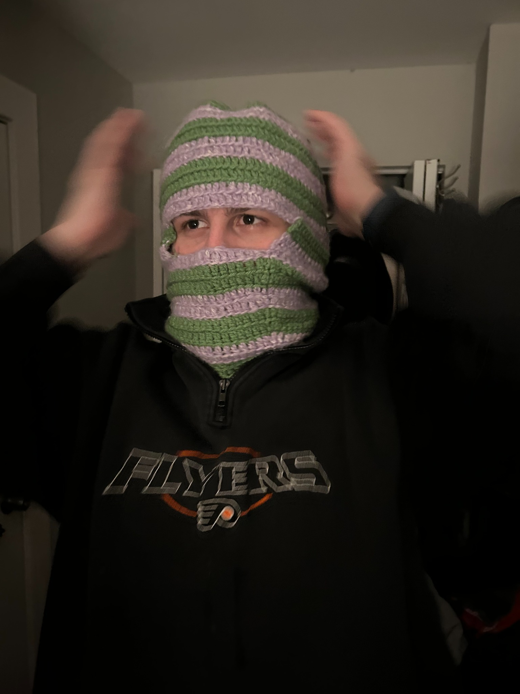
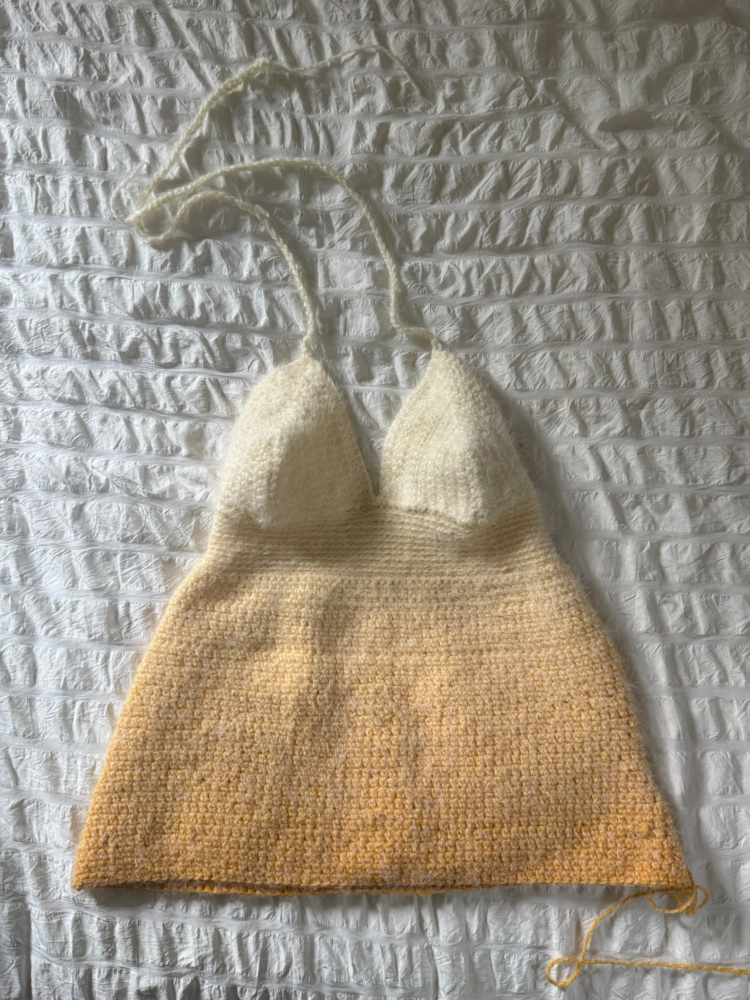

Granny Square Purse
Working on the strap and lining!
After learning how to crochet in 2021, I have worked on more projects than I can count. Here are some of my favorites.
← BACK TO HOME







I’m always working on something new. Here are a few projects I’m currently working on.

Working on the strap and lining!

Adding length and adjusting the fit.